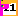

0xFF
A Game framework for bitbox
Bitbox : Hardware project
- side project for fun
- DIY open hardware, retro game console project
- single board / 1 chip (5x6.5 cm)
- 15bit VGA, 2xUSB, 1 microSD
- 168MHz, 1M flash, 192k RAM : not enough to keep a whole image (typ. 640x480)
- bitbox micro half-everything (size, components, CPU speed, memory, usb, resolution, microSD, cost)
Development
- retro coding : direct hardware handling from CPU
- no OS, driver libs embedded in games
- C development with gnu gcc toolchain on stock ubuntu/windows/macos/haiku
- PC backend for low level libs
- sound generation
- USB handling
- graphics generation ( scanline-based )
Games and community
- bitboxes around the world !
- small active core of developers for games, libs, ..
- custom extensions / video outputs ...
- https://github.com/makapuf/bitbox
- See software index - 26 entries so far
- include games, 3 emulators, programs, video player ...
Survey: Who knows
- game development (in C)
- handling collisions & sprite priorities yourself
- generate line-based graphics sprites/tiles w/ collisions
- make pixel graphics with Gimp
- do 2D level design (by example with Tiled)
- compiling/debugging for an ARM cortex m4 micro (setting up the toolchain)
- compose music with a tracker
Let's simplify
- seems quite challenging for a simple game
not that much : learning each of those is simple
- must lower (perceived) barrier to entry to build, program and (finally) design simple games.
New survey
- who knows how to make a .BMP file with gimp ?
simplified process
- make a complete simple game with a unique image
- put it in a SD card, the SD card in console, power on
- an interpreter program loads the image in RAM
- play the game
THE MARIO MAKER OF THE BITBOX !
(restricted to certain kind of 2d games)
general workflow
REFERENCE.md
/ \
defs.h your brain+gimp
| |
0xFF.c program BMP file on SDCard
| |
bitbox flash --> Play. <-- bitbox RAM
(or pc emulator)
Question
- what do you need to make a 4-level 2d platformer ?
- and how do you encode it in an image ?
A 2D platformer/side shooter/infinite runner ?
- World Physics (scroll, jumps, gravity, ... )
- Tileset graphics and behaviour (terrain)
- Level Tilemaps
- Sprites frames graphics, behaviours & movements :
- program (e.g.: mondrian programming language)
- presets (mario maker)
- Music and sound effects
The canvas
- 256 colors, 256x256 pixels bitmap
using bitbox fixed micro palette
- divided in 16x16 squares of 16x16 pixels
-
256 colors (0-0xFF) / 256 tiles / 256 pixels per tile
relations : tile <-> pixel in a tile, pixel in tile <-> color, color<-> tile
drawings
- tiles : draw them on canvas
- sprite frames : draw them on canvas
- tilemap : ref to a tile with a color
ex : topleft tile = number 00 = color black
(also top left color in palette)
no behaviours yet
The lower tiles
- 5 Lower tiles to define all behaviours
- minimap, level/obj defs, titles, music, sound effects
- all described in REFERENCE.md file
minimap
- lower left tile.
- 256 pixels representing the 256 tiles
- level : one color per level id
- tiles : behaviour or the tile through preset colors (see ref.)
levels/objects info
- one tile with one line per definition
- 4 first ones for levels, next for objects
- levels : physics, type of game, color on minimap
- objects : tile id on canvas, movement type, collision, action after kill, +alt ...
- see reference, many (interacting) types !

- movements
- static, once, bulletL/R, walk, walkfall, walkjump, sine, player, sticky, bumps
- collision
- none,block,kill,killrespawn,coin,life, key, spawner,switchtile,3keyswitch,endlevel,spawnpoint
- spawn
- spawned sprite id
using a real map editor
tiles + sprites png + tilemap/sprites tmx ⇔ bmp level using tools
Your turn !
https://github.com/makapuf/bitbox-0xFF